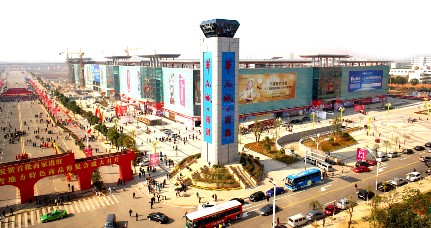

4号中部名优食品交易广场，建筑面积：约20万㎡，经营范围：烟酒、粮油、茶叶、保健品、调味品、饮品、干货、世界各地土特食品等。
江西地市绿色名优食品馆：由省商务厅牵头，集合省内11个地市的名特优产品，以区域为单位设馆，以展代销为农副产品交易提供新的平台，推动市场转型升级，进一步打开农副产品销路，从根本上推动地方经济的发展。
国内外绿色名优食品展馆：将全国乃至世界各地的名特优产品，以主题馆形式集中展示，既有来自全国各省市的各类土特产品等，也有来自世界各地的舶来品。既是“一站式”选购特产的大超市，又是休闲观光的理想场所。